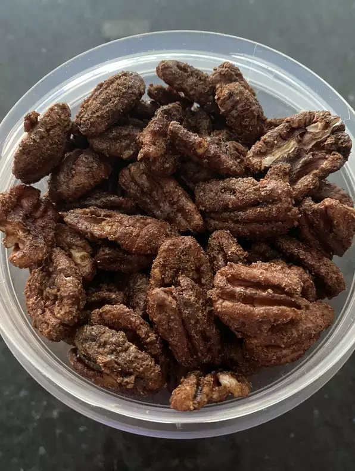

"PECAN SNACK"

Description
These pecan snacks smell like a walk through a county fair and taste heavenly!
The prep time for this snack is 10 mins and the cook time is 1 hour. With the ingredients it yeilds upto 1 pound. The nutrition value in each serving is:
Per Serving: 117 calories; protein 1.4g; carbohydrates 6.7g; fat 10.2g; sodium 74.4mg.
INGREDIENTS
- 1 pound pecans
- ¾ cup white sugar
- 1 teaspoon ground cinnamon
- 1 teaspoon salt
STEPS
- Preheat the oven to 250 degrees F (120 degrees C).
- Beat egg white with water in a large bowl until frothy. Stir in pecans and mix to coat. Combine sugar, cinnamon, and salt in a small bowl; stir into pecan mixture. Spread pecans on a baking sheet.
- Bake, stirring every 15 minutes, in the preheated oven for 1 hour. Store in an airtight container.